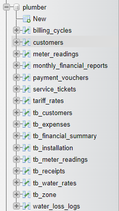

จากการตรวจสอบภาพโครงสร้างฐานข้อมูลใน phpMyAdmin ที่ผู้ใช้งานได้จับภาพหน้าจอมา (Database: plumber / db_city_water_supply) ระบบนี้ใช้สถาปัตยกรรมแบบ 3-Tier Web Database Architecture ซึ่งประกอบด้วย 3 ส่วนสำคัญที่ทำงานประสานกันอย่างมีประสิทธิภาพ:

PDO ในไฟล์ api/db.php เพื่อดึงข้อมูลมาแสดงผลบนหน้าจอ และบันทึกข้อมูลธุรกรรมที่เจ้าหน้าที่หรือลูกบ้านกรอกเข้ามาแบบ Real-timeตารางที่ปรากฏในรูปภาพ phpMyAdmin ทั้ง 16 ตาราง ถูกจัดสรรออกเป็น 5 กลุ่มโมดูลหลัก ซึ่งเชื่อมโยงข้อมูลกันอย่างเป็นระบบ ดังนี้:
| ที่ | ชื่อตารางใน phpMyAdmin | คำอธิบายหน้าที่การทำงานในระบบ | คีย์และการเชื่อมโยง (Key Relations) |
|---|---|---|---|
| 1 | billing_cycles | รอบบิลการใช้น้ำประจำเดือน: เก็บงวดประจำเดือน เช่น 8-2567, วันเปิดรอบ, วันปิดรอบ, กำหนดชำระเงิน และสถานะรอบ |
id (PK), cycle_code (Unique) เชื่อมไปยัง meter_readings |
| 2 | customers | ทะเบียนผู้ใช้น้ำ (ลูกบ้าน): รหัสผู้ใช้ (เช่น WY-001), ชื่อ-นามสกุล, บ้านเลขที่, โซน, เบอร์โทร, พิกัด GPS |
id (PK), customer_code (Unique) เชื่อมไปยัง meter_readings |
| 3 | meter_readings | สมุดบันทึกเลขอ่านมิเตอร์: เก็บเลขอ่านครั้งก่อน, ครั้งนี้, หน่วยที่ใช้, ยอดเงินรวม, สถานะชำระเงิน (unpaid/paid) | id (PK), customer_id (FK), cycle_code (FK) |
| 4 | monthly_financial_reports | รายงานงบการเงินประจำเดือน: สรุปยอดค่าน้ำรวม, ค่าธรรมเนียม, ยอดค้างชำระ, ต้นทุนการผลิต, กำไรสุทธิ | id (PK), cycle_code เชื่อมกับ billing_cycles |
| 5 | payment_vouchers | หลักฐานการรับเงิน/สลิปโอน: บันทึกประวัติการออกใบเสร็จ, ยอดเงิน, วิธีการชำระ (เงินสด/PromptPay QR) | id (PK), reading_id (FK), customer_id (FK) |
| 6 | service_tickets | ระบบแจ้งซ่อมและร้องเรียน: รับแจ้งท่อแตกรั่ว, น้ำไม่ไหล, ขอติดตั้งมิเตอร์ใหม่ พร้อมสถานะงานช่าง | id (PK), customer_id (FK เชื่อม customers) |
| 7 | tariff_rates | อัตราค่าน้ำแบบขั้นบันได: กำหนดช่วงหน่วยน้ำ (0-10, 11-20), ราคาต่อหน่วย และค่าบำรุงรักษา 10 บาท/เดือน | id (PK), ช่วงหน่วย min_unit, max_unit, price_per_unit |
| 8 | tb_customers | ตารางลูกค้า (Relational Schema): รองรับโครงสร้าง Normalized Database มาตรฐาน เชื่อมโยงกับ tb_zone | cus_id (PK), zone_id (FK) |
| 9 | tb_expenses | บันทึกรายจ่ายกองการประปา: ค่าไฟปั๊มน้ำ, ค่าสารส้ม-คลอรีน, ค่าซ่อมท่อ และเงินเดือนเจ้าหน้าที่ | exp_id (PK), exp_category, exp_amount |
| 10 | tb_financial_summary | สรุปยอดบัญชีรับ-จ่ายรายปี: ข้อมูลกระแสเงินสดและยอดเงินคงเหลือของกองทุนประปาหมู่บ้าน | summary_id (PK), fiscal_year |
| 11 | tb_installation | ประวัติการขอติดตั้งมิเตอร์ใหม่: คำขอติดตั้ง, ขนาดมิเตอร์ (1/2", 3/4"), ค่าธรรมเนียมติดตั้ง | inst_id (PK), cus_id (FK เชื่อม tb_customers) |
| 12 | tb_meter_readings | ตารางเลขอ่านมิเตอร์ (Normalized): ใช้สำรองและรองรับการประมวลผลข้อมูลร่วมกับระบบภายนอก | reading_id (PK), cus_id (FK) |
| 13 | tb_receipts | ประวัติใบเสร็จรับเงินอย่างเป็นทางการ: จัดเก็บเลขที่ใบเสร็จรับเงินสำหรับพิมพ์สมุดคุมใบเสร็จ | rcpt_id (PK), reading_id (FK), rcpt_no |
| 14 | tb_water_rates | อัตราค่าน้ำมาตรฐานท้องถิ่น: บันทึกข้อบัญญัติท้องถิ่นเรื่องอัตราค่าน้ำและการใช้น้ำสาธารณะ | rate_id (PK), rate_type |
| 15 | tb_zone | ทำเนียบโซนและสายเดินจด: แบ่งพื้นที่หมู่บ้าน เช่น โซน 1 คุ้มทุ่งสามัคคี, โซน 2 คุ้มวัดศรีดอนไชย | zone_id (PK), zone_name |
| 16 | water_loss_logs | บันทึกน้ำสูญเสีย (NRW): เปรียบเทียบน้ำที่ผลิต vs น้ำที่ขายได้ เพื่อตรวจสอบท่อแตกรั่วใต้ดิน | id (PK), loss_percent, log_date |
customers และ meter_readings เป็นโครงสร้างสมัยใหม่ที่รองรับ RESTful JSON API และการทำงานความเร็วสูงบนมือถือ ส่วนตารางกลุ่ม tb_... เป็นโครงสร้าง Normalized Relational Schema (3NF) ที่รองรับการรายงานเชิงลึก ทำให้ระบบมีความเข้ากันได้สูง (Backward & Forward Compatibility)
เว็บไซต์เชื่อมต่อไปยังฐานข้อมูล MySQL ผ่านไฟล์ศูนย์กลางคือ api/db.php โดยใช้เทคโนโลยี PDO (PHP Data Objects) ซึ่งมีข้อดีคือมีความปลอดภัยสูง, รองรับ Prepared Statements ป้องกัน SQL Injection, และทำงานกับภาษาไทยได้อย่างสมบูรณ์:
// โค้ดเชื่อมต่อฐานข้อมูลใน api/db.php
$host = 'localhost';
$db_name = 'db_city_water_supply'; // ฐานข้อมูลที่ phpMyAdmin เปิดอ่าน
$username = 'root';
$password = '';
try {
$pdo = new PDO("mysql:host={$host};dbname={$db_name};charset=utf8mb4", $username, $password, [
PDO::ATTR_ERRMODE => PDO::ERRMODE_EXCEPTION, // แจ้งเตือน Error เป็น Exception
PDO::ATTR_DEFAULT_FETCH_MODE => PDO::FETCH_ASSOC, // คืนค่าแบบ Associative Array
PDO::MYSQL_ATTR_INIT_COMMAND => "SET NAMES utf8mb4, time_zone = '+07:00'" // เวลาและฟอนต์ไทย
]);
} catch (PDOException $e) {
die("Database Connection Error: " . $e->getMessage());
}| หน้าเว็บไซต์ | ตารางใน phpMyAdmin ที่เกี่ยวข้อง | คำสั่ง SQL และพฤติกรรมข้อมูล (Behavior) |
|---|---|---|
| meter_reading.php (จดมิเตอร์ภาคสนาม) |
• customers• meter_readings• billing_cycles |
• เมื่อเปิดหน้า: รัน SELECT c.*, m.current_reading FROM customers c LEFT JOIN meter_readings m ... เพื่อโหลดรายชื่อลูกบ้าน• เมื่อกดบันทึก: รัน INSERT ... ON DUPLICATE KEY UPDATE ลงตาราง meter_readings
|
| finance_billing.php (การเงิน & ออกบิล) |
• meter_readings• payment_vouchers• tariff_rates |
• ดึงยอดค้างชำระมาสร้าง PromptPay QR Code • เมื่อรับเงิน: รัน UPDATE meter_readings SET status='paid' และ INSERT INTO payment_vouchers
|
| portal_citizen.php (พอร์ทัลลูกบ้าน) |
• customers• meter_readings• service_tickets |
• ลูกบ้านค้นหาประวัติค่าน้ำผ่านเบอร์โทร/รหัสผู้ใช้ • ส่งคำร้องแจ้งท่อแตกรั่ว: รัน INSERT INTO service_tickets
|
| dashboard.php (แดชบอร์ดผู้บริหาร) |
• monthly_financial_reports• water_loss_logs |
• รันคำสั่ง Aggregate SUM(total_amount), COUNT(*) เพื่อพล็อตกราฟรายรับ-รายจ่ายและน้ำสูญเสีย
|
PDO (PHP Data Objects) ในไฟล์ api/db.php ครับ โดยระบุ Host (localhost), Port (3306), ชื่อฐานข้อมูล, และกำหนดการถอดรหัสเป็น utf8mb4 เพื่อรองรับภาษาไทย และตั้งค่า Timezone เป็น +07:00 (เวลาประเทศไทย) พร้อมเปิด Error Mode เป็น ERRMODE_EXCEPTION เพื่อดักจับ Error ได้อย่างแม่นยำครับ"
customers และ meter_readings เป็นแบบ Modern API Schema ที่มีโครงสร้างกะทัดรัด เหมาะกับการเรียกผ่าน JavaScript/JSON บนมือถือ ส่วนตาราง tb_... เป็น Relational Normalized Schema ดั้งเดิมที่แยกตารางเป็น 3NF เพื่อเก็บประวัติการติดตั้งและสายเดินจดเชิงลึก ทั้งสองชุดข้อมูลถูกเชื่อมโยงกันทำให้ระบบมีความยืดหยุ่นสูงครับ"
tariff_rates ครับ โดยคำนวณจากหน่วยน้ำที่ใช้ = เลขครั้งนี้ - เลขครั้งก่อน แล้วนำไปคิดราคาตามขั้นบันได เช่น 10 หน่วยแรกหน่วยละ 5 บาท, 10 หน่วยถัดไปหน่วยละ 7 บาท บวกค่าบริการรักษามิเตอร์คงที่ 10 บาท/เดือน ระบบจะคำนวณและแสดงผลสดบนหน้าจอทันทีที่คีย์ตัวเลขครับ"
เลขปัจจุบัน < เลขครั้งก่อน ครับ โดยจะคำนวณตามสูตรการทดรอบมิเตอร์คือ (10,000 - เลขครั้งก่อน) + เลขปัจจุบัน แทนที่จะแจ้งว่าติดลบ พร้อมแสดงป้ายเตือนให้เจ้าหน้าที่ตรวจสอบว่ามิเตอร์หมุนครบรอบจริงหรือไม่ครับ"
$stmt->prepare() และ $stmt->execute([$id])) ไม่มีการนำตัวแปรผู้ใช้ไปต่อ String ใน SQL เด็ดขาด ทำให้ Hacker ไม่สามารถแทรกคำสั่ง SQL แปลกปลอมเข้ามาได้ครับ"
meter_readings แล้วแปลงเป็นรหัสมาตรฐาน EMVCo PromptPay Payload แสดงเป็น QR Code บนหน้าจอ เมื่อมีการยืนยันชำระเงิน ระบบจะบันทึกลงตาราง payment_vouchers และเปลี่ยนสถานะใน meter_readings เป็น paid ทันทีครับ"
customer_code ไปจับคู่กับข้อมูลในเครื่อง แล้วแสดงการ์ดบันทึกตัวเลขทันที เมื่อกดบันทึก JavaScript จะส่ง JSON ผ่าน fetch() ไปที่ api/readings.php เพื่อรันคำสั่ง SQL บันทึกลงตาราง meter_readings ภายในเสี้ยววินาที ทำให้สแกนหลังถัดไปได้อย่างต่อเนื่องครับ"